B区出发，普通中年男人的首半马复盘
一、你的能量，超乎你想象
不由得想起红牛的经典广告词：

之前自测的10km的最好成绩是49分47秒，平均配速为4分56秒，当时感受上觉得已经到极限，短时间很难再提升。
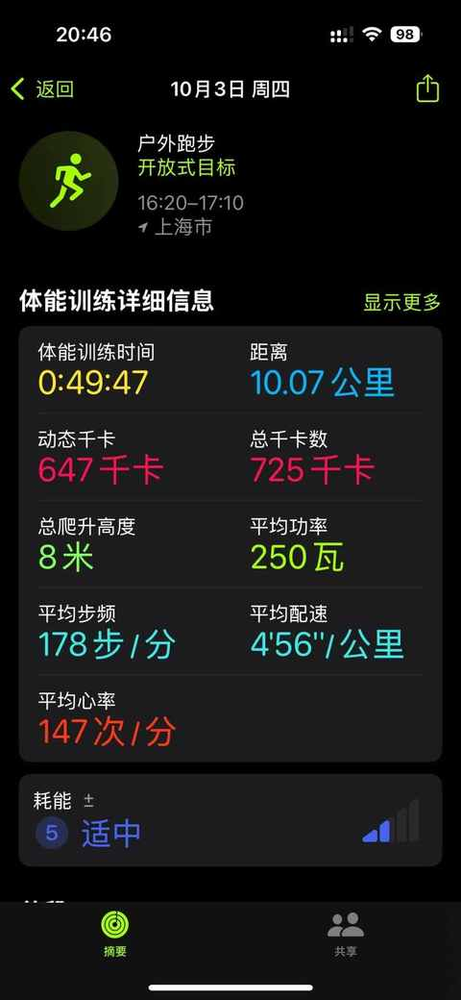
比赛之后发现，人都是有可挖掘的潜能的，有触发机制需要契机、耐力和意志力，最终配速为4分55秒。
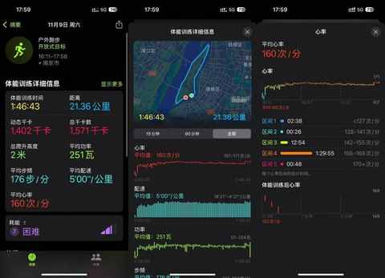
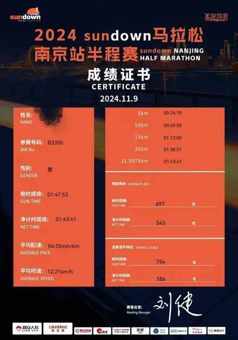
二、多试试总会有收获
本来没想着今年报名马拉松比赛，计划是再练练，明年再试试看。
不过，经朋友提醒尝试报名了几个临近上海的马拉松比赛，没想到第二次报名就中签啦。
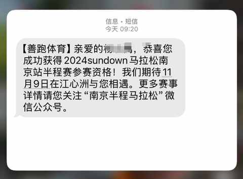
赛道位于江心洲，对新手很友好，距离上海也足够近。
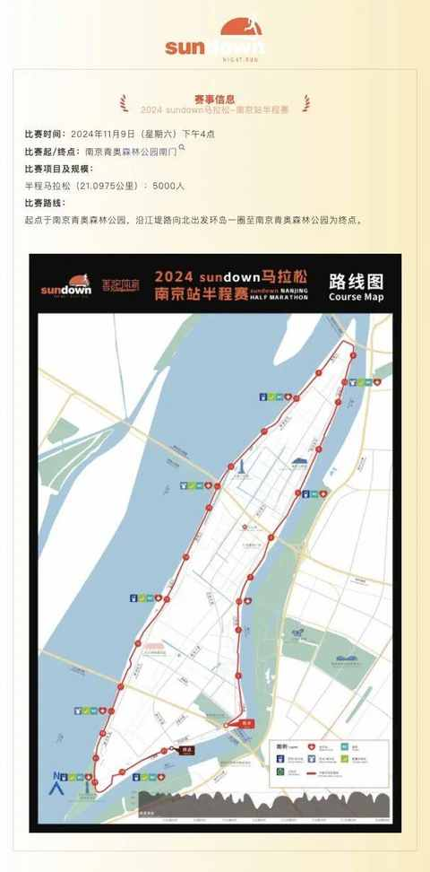
更友好的是比赛时间是下午4点，无需赶早参加，特别适合当天往返。
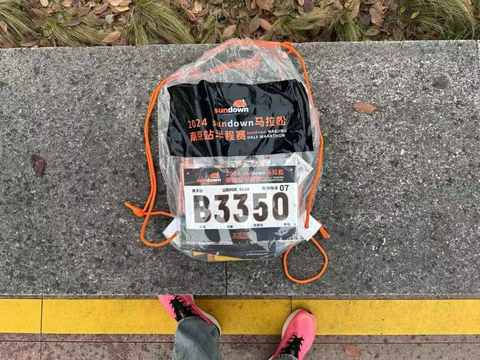
参赛包是比赛当天上午领取。
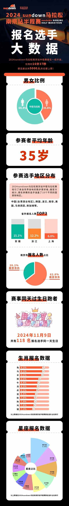
报名选手的大数据比较意外的是平均年龄为35岁，现场跑的过程中确实发现不少大哥大姐，也有一些满头白发的大叔。
三、安全是最大的目标也是完赛的前提
在比赛前就有做好可能会跑蹦，会中途退赛的心理建设，大概在18km之后能感受到大腿和臀部肌肉的紧张，但是最后一公里还是尽全力冲刺了一把，好在顺利跑过终点。
在跑完 之后看 了一些科普半马的文章之后才发现自己在最后一 公里冲刺对于没有比赛经验的新手来说是错误的做法。
在接近力竭的情况下冲刺很容易受伤，甚至摔倒。
正确的做法是保持速度跑过终点，从而顺利的安全完赛。
四、赛前的充分热身很必要
马拉松比赛的人都很多，由于比赛人数众多，大家要在一起等待1-2个小时左右的时间，如果不进行热身很有可能开跑的前面几公里都要找状态。
可以在赛前看一些热身的视频，也能在现场观察其他人的热身方式，选择自己能完成的动作。
鉴于温度尚可接受，所以本次的赛前热身并没有把参赛包里面的雨衣穿上，赛后查询相关资料发现穿上会更好，开跑前再脱掉。
五、往前占位是有理由的
发令枪响后即可开跑，而且还会撒花，仪式感和氛围感满满。
第一排和最后一排的距离可能不到50m，但这50m可能差着2分钟。
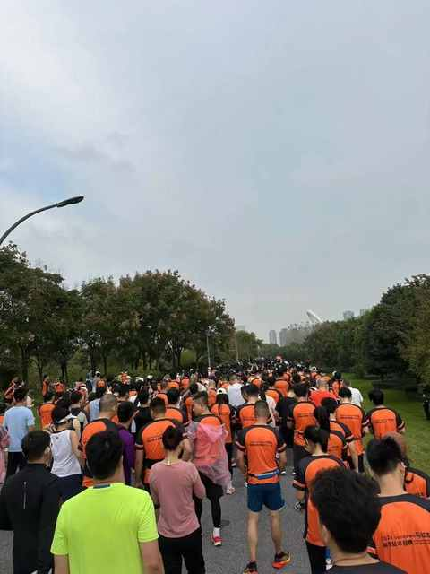
开跑后的前3km，我都在人流里面各种蹿，大概10km以后才感觉人流跑开，后面再参加比赛会尽量往前凑一凑。
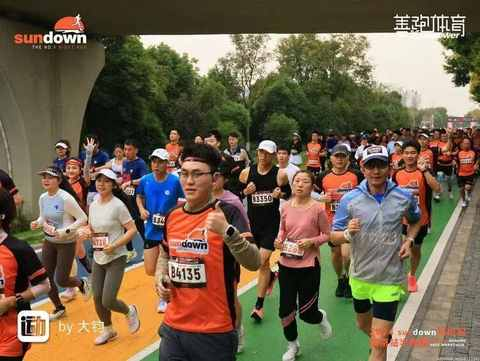
六、一双适合比赛里程和配速的跑鞋
在后半程的时候能感受到鞋子有被踩到底的感觉，相应的能提供的回弹就有衰减。
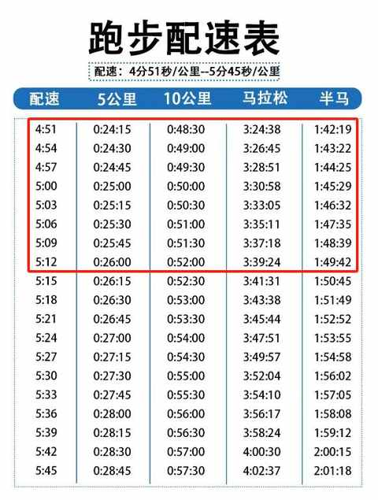
在后半程的时候能感受到鞋子有被踩到底的感觉，相应的能提供的回弹就有衰减。
实测下来强风2.0 pro 跑半马完全Ok，不过也是基于我的配速区间，如果要更快一点到4分30秒的配速可能就要重新选择其他款的鞋。
七、看到摄影师请做好表情管理
整个赛道设置有超多机位，摄影师会实时抓拍正在跑步的参赛选手。
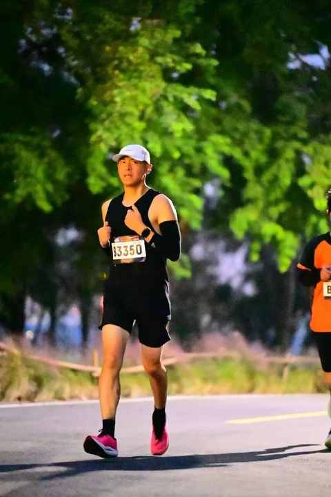
诚然有选手会在看到摄影师之后做出一些pose来吸引注意，从而更出片一些，我的建议还是遵从本心，看到摄影师之后做好表情管理从他身边正常的跑过去。
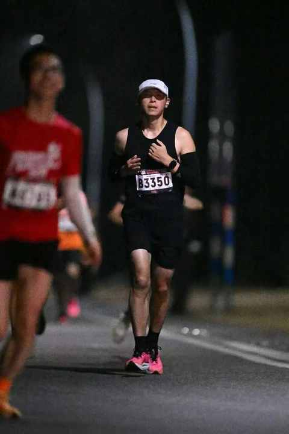
八、定期的以赛代练
参加人生中首个半马是一小步，更重要的是能从通过对比赛过程的回顾在赛后更好的去科学的有目标的去进行日常的跑步练习。
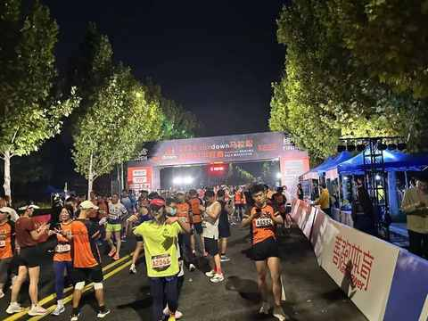
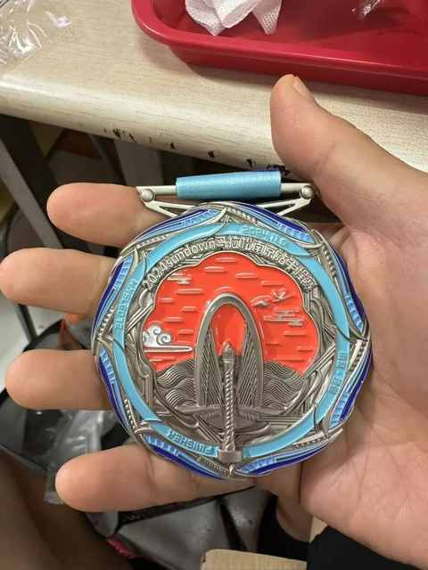